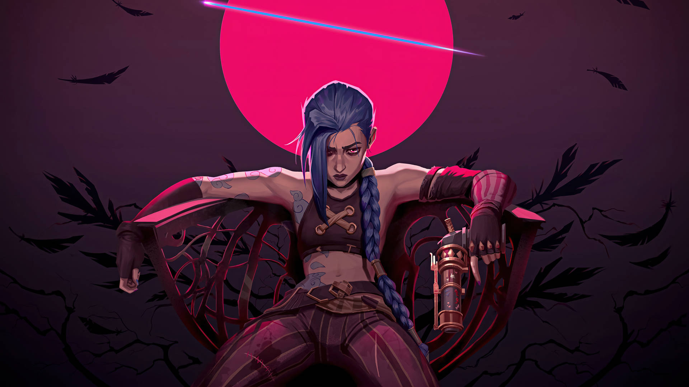
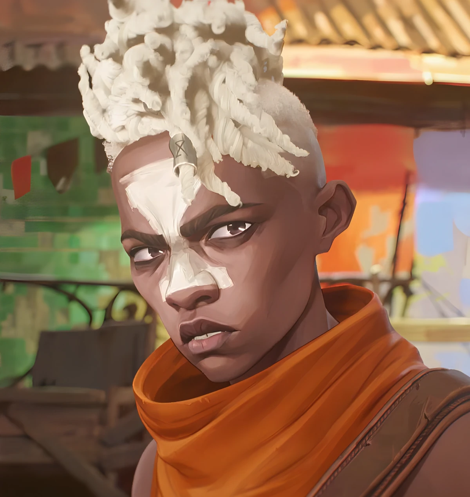

Caitlyn

Compasiva, Caitlyn quiere proteger a la gente y utiliza sus excepcionales habilidades de tiro para ingresar en la academia de policía y convertirse en Enforcer, decidida a triunfar por méritos propios.
Vi

Después de que los ejecutores de Piltover mataran a sus padres, Vi es una niña enfadada que no respeta a la autoridad y se mete en peleas a menudo. Quiere hacerse más fuerte para proteger a su hermana Powder y a sus hermanos adoptivos Mylo y Claggor, y acabar con Piltover para poner fin a la desigualdad a la que se enfrenta Zaun.
Jinx
Powder comienza siendo una niña tímida y torpe. Quiere ser fuerte y valiente como Vi, pero físicamente le cuesta seguir el ritmo de sus hermanos mayores durante sus travesuras. Sufrió un trauma al perder a sus padres a una edad temprana, que se acentuó cuando mató accidentalmente a su familia adoptiva y creyó que Vi la había abandonado.
Ekko
Ekko comienza siendo un niño travieso que utiliza su brillante mente para reparar objetos mecánicos en la tienda de Benzo. Era buen amigo de la pandilla de hijos adoptivos de Vander, que le apodaban Little Man, y admiraba especialmente a Vi con la esperanza de hacerse más fuerte.